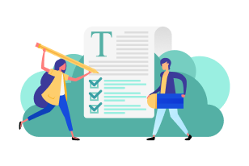
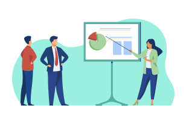

We’re looking for teams across all sectors, from around the world, who want to drive change through open contracting. Read more to find out if you’re eligible.
All applicants teams should be:
Pursuing a project that aims to use open contracting to achieve one of three goals of anti-corruption, sustainability, or inclusion.
Comprised of a strong team that includes at least four people integral to project implementation, including two team leads, a relationship manager, and procurement and data experts.
Committed to participate fully in the 18-month program.
Working in a country deemed “Good,” “Satisfactory,” “Problematic,” or “Difficult” by the World Press Freedom Index 2022.
What makes a good Lift candidate?
Dynamic, collaborative teams.
Your team should include a Relationship Manager who is skilled at building political support and navigating bureaucracy, a Procurement Expert who is knowledgeable about navigating the procurement system, a Technical and/or Data Expert who is knowledgeable about procurement data publication, analysis and use and/or is familiar in using technology solutions, and two Team Leads, who have the authority and capacity to coordinate the team and drive the project forward.
Goals and plans for impact from open contracting.
Lift is open to teams around the globe that want to use procurement as a lever for better economic, social, or environmental outcomes. You have a clear goal in mind and a problem that you are trying to solve—at the national, regional, or city level—that addresses one of our challenge question topics. You also have clear beneficiaries in mind and can articulate who in your community will benefit from this project.
Projects that aim for systemic change.
Lift is for systemic reform projects that seek to make progress across policy, processes, capacity, and data. It is not for general capacity building on open contracting or advocacy. While training, workshops, and open data publication and tools are important, they cannot be the whole of your Lift project—they should just be a means to reach your systemic goal.
Projects with buy-in and momentum, at all levels of maturity.
Your reform project should already have acceptance and support of some senior leadership that can help you move your project forward, make significant changes, and overcome opposition. Teams can be working on projects at different stages of development. You could be embarking on a new initiative, or working to refine and scale a piloted solution.
Teams who have the capacity and power to drive change.
Lift is all about having the capacity to make your big idea a reality. You should have a team who can dedicate significant time to drive this project forward on a weekly basis, team leaders who can commit for the duration of the program, data and IT infrastructure in place, and a budget to fund your time and your essential activities. You are eager to get input from your community on how you can better meet their needs.
Teams who bring together allies in reform.
We have seen that the strongest and most successful reform teams typically work together across sectors and silos, so we are especially looking for cross-departmental or cross-organizational collaborations. We strongly encourage teams to apply as a coalition of actors. As part of the application, we also ask for the commitment of your co-leads for the program duration of 18 months, and prefer that they come from two different agencies, departments, or organizations to promote collaboration in their respective entities. However, stand-alone applicants from civil society/nonprofit organizations or government agencies with outstanding applications and teams will be considered as well.
Approaches that could be replicated or scaled.
In the past, several Lift teams have used the program to test new approaches that they later scaled up in more regions, sectors, or agencies after the program’s end. We are interested in supporting projects that have this potential. Consider if your project includes processes, tools, or changes that you could improve and adapt for others to bring into their work.

Selection
Applications will be scored against the following key criteria:
1
The potential impact of the proposed project to improve the quality of public goods, works or services and the strength of the plan for achieving the project objectives
2
The team’s power to make change, including political buy-in and support from key stakeholders
3
The capacity of the core team to implement the project and mitigate challenges;
The Process
We have created a two step application process:

Application—Open

Pitch and interview—Invite-only
OCP staff will evaluate all written applications. The most competitive applicants will be invited to give a pitch presentation and interview. Up to 9 teams will be selected to participate in Lift, and winners will be announced in July.
While our aim is to select projects with the strongest potential for impact around the globe, final decisions about selection will also be made in consideration of regional and topic diversity, as well as OCP team capacity and organizational resources.
We want to help you prepare the strongest application possible. Please reach out to your regional manager for feedback and input throughout the application process.
If your team is not selected.
Lift is a highly competitive program. All applicants will be notified as soon as possible if they are not selected to move forward through the application process. We will also provide direct feedback on the submissions and identify alternative ways we can work with you.
Lift is just one way that we provide support to our partners. We also organize frequent community calls, which are advertised on our OCDS Google group, newsletter, Twitter and Facebook pages and social media. You can reach out to the OCP team at engage@open-contracting.org if you have a question about the implementation of the data standard.
Ready to get started?
We are looking for a variety of teams that have big ideas for using open contracting to fight corruption and strengthen democratic institutions, protect the environment or improve climate resilience, or promote social inclusion.